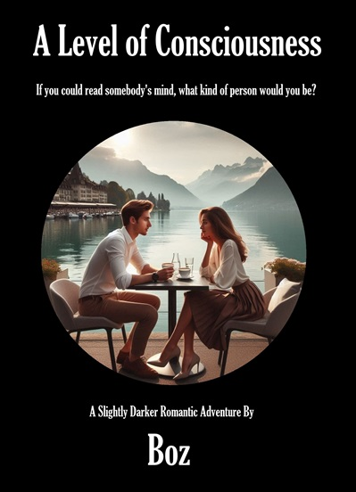

I am happy to say I have finished my fourth book A Level of Consciousness which should be available from the 16-Nov-2024 for the awesomely cheap cost of $0.99 if you are in the Amazon Kindle Eco-System or $FREE if you are happy to transfer it to your eReader manually.
A Level of Consciousness is a thought provoking techno-thriller set in a world not unlike our own, and about a woman who might have lived in it. It is a story about a witch who was not a witch, and a dragon that was not a dragon. It is a story set in the present day, between how much we know about the universe and how much we still have to learn. It is a story that starts with a friendship and ends with a romance. It is however not a story for children, nor is it a story for the faint of heart

The paperback and Kindle edition can be bought from Amazon here => Amazon
https://ko-fi.com/s/22d8cc6d97 – Free Download with option to donate ($0 is fine)
Or Direct download here => A-Level-of-Consciousness.epub (477KB)
You should save the epub file somewhere on your computer, but unless you have an eReader program installed like Calibre, you wont be able to view the book, and will need to transfer it to your eReader manually. For Amazon Kindle you just need to email the file as an attachment to your kindles email address (Send to Kindle instructions). I have also found instructions for the Kobo and the Nook but I am sure one of the many AI’s out there can explain how to do it much better than me.
So, what’s it about? Well, first a confession, I really did want this new book to be a romance novel, and that is how it started. Technically it still sort-of a romance novel (by some weird definitions), and the first iteration of the cover for the e-book and the paperback even had a sweet, girl-friendly click-bait cover image. However several people did point out that it was definitely not a romance!
Normal romantic tropes, even the supposedly exciting ones, tend to be a bit lame and a bit predictable, which is why I found myself in the middle of the book wanting a bit more of a darker plot which would surround the girl, boy, lovey-dove parts. Unfortunately, that was when it morphed into something a lot more sinister!

Original Click-Bait Faux-Romance Cover
So, the new book is not technically a romance as it has a much much, much darker premise.. A ‘dark romance’ maybe? But ‘dark romance’ is actually a genre, and one which this book definitely does not fit. So what we have here is yet another book impossible to fit into the normal genre Venn-diagram as it covers topics much beloved in romantic novels such as terrorism, mind-reading, Nazi occult practices, mythical monsters and secret criminal societies bent on world domination. The writing also goes much more into graphic detail on the gory parts and uses a bit fruitier language than the previous book. Because of this, the book will get a 13+ rating and probably won’t want to be read by the normal readers of the romance genre!
Finally, an apology. The heroine is yet another young woman, though quite a different one from my other books (The Summer of Reasoning). But don’t stereotype me just yet! The reason for this is that for the last ten years I have been writing various scenes, and what-if scenarios, and had literally hundreds of them with young heroines. Rather than waste them, I used one set of women in my last book, and the other set in this one. However, the premise of the next book (still mostly in my head) will be different still as I have now run out of strong female characters.
Unlike the previous books, this new book is stand-alone and comes in at just 112,000 words which is more the length of a normal paperback thriller and so is suitable for a real printed version. If dead-trees are your preferred option, then the printed book is also available.